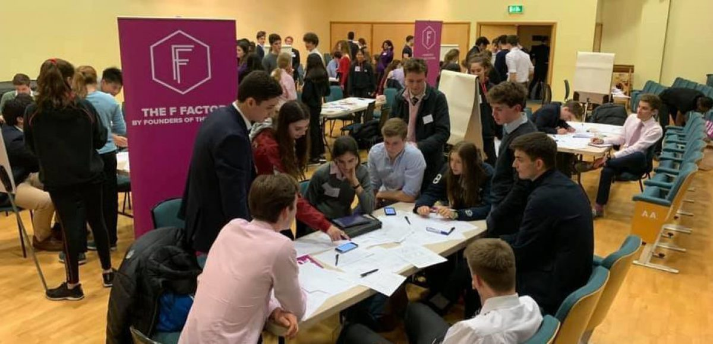

Founders of the Future Workshop
The school recently welcomed Founders of the Future to come in and host a tech sector workshop.
Founders of the Future aims to empower aspiring entrepreneurs on their journey to set up their own businesses. Students from Putney High, Godolphin & Latymer and Ark Putney Academy joined our pupils for the day, with 80 budding entrepreneurs filling the Wathen Hall.
The event was a great chance for Paulines to collaborate with students from different schools and backgrounds and produce the outline for a variety of apps which were designed to combat homelessness, excessive waste and inefficient food usage. Those present at the workshop will be submitting their ideas to the F Factor, a nationwide start-up competition that looks to engage students with some of the most pressing problems the world faces, challenging them to come up with innovative solutions to these issues.
The pupils may be in with the chance to win the competition that is open to 14-18 year olds, with £10k equity up for grabs. Good luck to all the pupils on their first steps towards their entrepreneurial journeys!